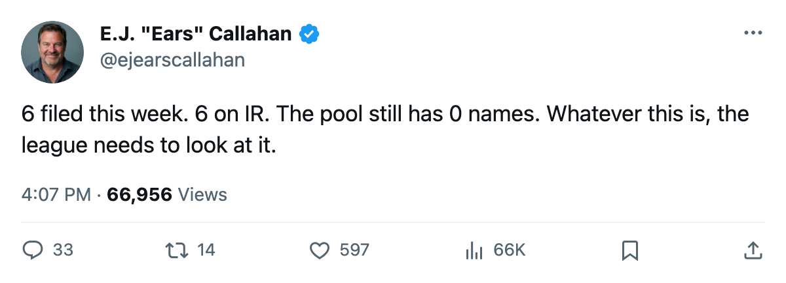
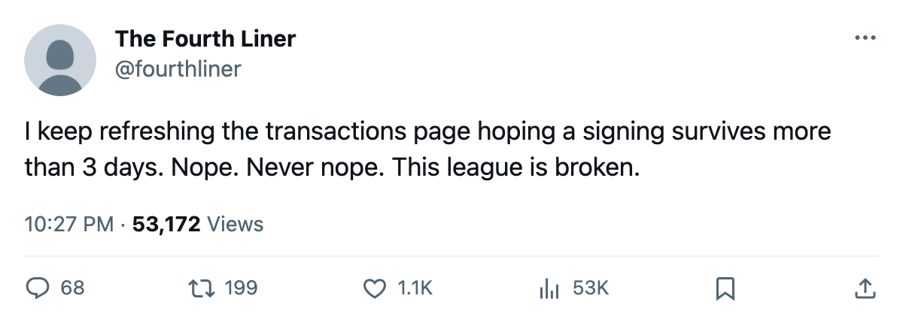

Sign-and-Injure, Round 4: The Calder Winner Filed Oct 13. His Ankle Gave by Oct 15.
6 contracts in 2 days. 6 injuries. The pool still reads 0. The desk's pattern held 8 names on Friday; the 6 new ones make it the largest wave yet.
 E.J. "Ears" CallahanInsider · The Hot Stove
E.J. "Ears" CallahanInsider · The Hot Stove

6 filed, 6 broken, pool at 0

Tuomo Pihlman76 won the Calder Trophy last season.  Minnesota Wild signed him on Oct 13 for $147,070. His ankle went sometime between Oct 13 and Oct 15. He returns Oct 22.
Minnesota Wild signed him on Oct 13 for $147,070. His ankle went sometime between Oct 13 and Oct 15. He returns Oct 22.
Five other contracts filed that same week. All five men are on IR. The desk logged 8 names on Friday; these 6 are the largest batch in the pattern's short history.
| player | club | filed | salary | body part | returns |
|---|---|---|---|---|---|
| [[player:1001038\|Tuomo Pihlman]] | Minnesota Wild | Oct 13 | $147,070 | ankle | Oct 22 |
| [[player:842\|Stephane Robidas]] |  New York Islanders New York Islanders | Oct 13 | $237,620 | elbow | Oct 31 |
| [[player:957\|Marco Sturm]] |  Philadelphia Flyers Philadelphia Flyers | Oct 13 | $452,230 | leg | Dec 30 |
| [[player:243\|Harold Druken]] |  Carolina Hurricanes Carolina Hurricanes | Oct 13 | $362,890 | abdomen | Nov 12 |
| [[player:741\|Mattias Ohlund]] |  Vancouver Canucks Vancouver Canucks | Oct 14 | $347,910 | foot | Oct 31 |
| [[player:1009\|Yannick Tremblay]] |  Atlanta Thrashers Atlanta Thrashers | Oct 14 | $260,810 | leg | Dec 28 |
Four clubs filed on Oct 13 alone. Two followed Oct 14. Not one man made it through a week in a new sweater.
Nobody is spending real money to get hurt
The highest contract on that list is Sturm's $452,230. The lowest is Pihlman's $147,070. These are depth deals, cheap bodies the clubs picked up in the first fortnight and cannot deploy. Every one of these is a bottom-six addition.
Vancouver Canucks sits 2-1-1 with 5 points in the Northwest Division. Ohlund, a 84 overall with 100 morale, carried 4 games and 4 points before the foot went. He signed on Oct 14, the same day ATL took Tremblay. Vancouver Canucks will play without him until Oct 31.
Sturm is the longest absence in the new batch. Dec 30 is 2 months out. He scored for Philadelphia Flyers in the lineup before the leg went. Philadelphia Flyers sits 2-1-0 in the Atlantic.
The pool reads 0. It has read 0 for months.
No player is unsigned in this league. The free-agent pool has held at 0 since the close last summer. Fourteen names have filed contracts since early October, and every one of them is on the injured list. You sign a man, you lose him, and there is nobody left to sign in his place.
The desk scored 8 names and 0 shifts on its last audit. Two days later the count grows by 6 and the shifts are still 0.
What a league source would say
A man who would know, reached at the Meadowlands where the office sits quiet and the phone does not ring, said the clubs are signing on the assumption the injuries are timing. "They all filed in the same week. They all broke in the same window. That's not a coincidence, that's a calendar." The desk does not know what calendar he means.
The flame on this one is two: not a trade rumor, not a single name in play, but a pattern so clean it stops being noise. 6 for 6. Next edition, the desk will count again.

